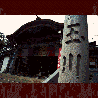

玉川大師/東京都世田谷区
二子玉川の駅の近く、玉川大師の本堂の下には濃密な地下宮殿が存在する。
その名も地下霊場遍照金剛殿。カッコいい名前だ。
お寺のパンフによるとこの地下霊場は昭和9年完成、深さ5�E参道約100�Eとなっている。深さ5�E、大したことないと思うなかれ。5�Eだろうと50�Eだろうと地下は地下。灯りが無ければ真っ暗闇なのだ。本堂の隅にある階段を降りるとそこはもう何も見えない暗黒のトンネル。壁づたいに歩いていく。先が全く見えないのでどのくらい歩いたのか判らなくなる。しかも通路は一直線ではなく右に左にカーブしているので完全に現在位置が判らなくなる。日常空間から異空間へと精神状態がシフトされていく。
長い(のかどうかも判らないが)暗闇のトンネルを抜けると、いきなり超濃密な回廊に出る。幅1�E程の通路の両端に、やっぱり1�E位の二段飾りの祭壇に四国88ヶ所と西国33ヶ所の大師＆観音様が奉られているのだ。この凝縮具合は尋常ではない。凄い。
コの字型の回廊を抜けると現われるのは都内最大(とパンフに書いてあった)の釈迦涅槃像。御影一枚石重さ一千貫ナリ。仏様もさることながら祭壇のコテコテ具合が秀逸。薄暗い雰囲気とあいまって、一体何処にいるのかを忘れてしまう程。
たっぷりとナチュラルトリップして外に出る。小高い丘の上のこの寺からは二子玉の高島屋が見える。お～、ここはやっぱり日本だった。日本は深い。
まさに本邦希有の秘密マンダラ大殿堂(パンフより)、面白かったです。
1997.5.
珍寺大道場 HOME